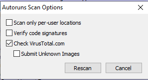
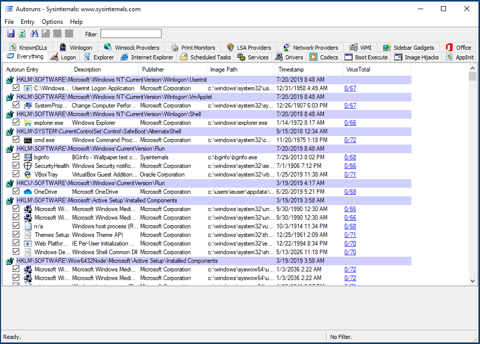

Review Programs Launching at Startup
Spyware needs to find a way to run on start-up when a computer is rebooted, it is thus one of the first thing to check when looking for malicious programs. Windows systems have different ways to have programs running on startup, and spyware often use tricks to appears legitimate and/or avoiding standard autoruns methods.
The Sysinternals Autoruns tool allows to list exhaustively the programs running on start-up (you should run this program as Administrator if possible) :

Autoruns embedds a feature to check for binary files on VirusTotal, it is a very good way to do a first check on suspicious files (check the "About Virus Total" part after for more information). To enable check on VirusTotal, go in Options > Scan Options and enable "Check VirusTotal.com" (be careful of not enabling "Submit Unknown Files") :

Then Autoruns will take a bit of time to check for all the files on startup and add results under the form X/X where the first X is the number of antiviruses detecting this file as malicious and the second X is the total number of antiviruses checked.

Use this analysis to look more closely to :
- Any file detected as Malicious by at least one antivirus
- Any file unknown by VirusTotal
Then look for suspicious entries manually in tabs Logon, Scheduled Tasks, Services.
For each of these entries, you should look for :
- The name of the entry : a random string would be suspicious, or any common name with typo (crhome)
- The description : most legitimate programs have a description
- The path : any program installed in C:\Users is suspicious (often in C:\Users\USERNAME\AppData), C:\Temp is clearly abnormal, most of the programs should be in C:\Program Files or C:\Program Files (x86)
Common tricks :
- Many spyware will use the Windows program
rundll32.exeto load the actual malicious file (often a dll file but that can be named otherwise). As rundll32 will be checked on VirusTotal it will avoid the detection
Example of suspicious entries :
- The KeyBoy spyware creates a Registry Key in
HKEY_CURRENT_USER\SOFTWARE\Microsoft\Windows NT\CurrentVersion\Winlogon\shellwith the valueexplorer.exe,C:\Windows\system32\rundll32.exe "%LOCALAPPDATA%\cfs.dal" cfsUpdate
About VirusTotal
VirusTotal (often called VT) is originally a Spanish company acquired by Google in 2012. Its business model is to provide checking of files by many anviruses for free to everyone, and sell access to this data to security companies. So keep in mind that files uploaded to VirusTotal are not kept confidential.
There are two ways to check for a file in VirusTotal :
- Check if the fingerprint is known by VirusTotal : this is what is done by default by Sysinternals tools, it means that the file itself is not sent to VirusTotal, but it only check if the file is already known by VT. All Windows system files should be known, an unknown file on startup is definitely suspicious
- Upload the file to VirusTotal : in that case the file is sent ot VirusTotal which analyze it using multiple antiviruses. Keep in mind that VirusTotal will share this file with its customers, so do not upload any sensitive information.
Regarding results :
- A file having more than 5 antiviruses detecting it as malicious definitely indicate a spyware. You can check for the name of the spyware given by antiviruses or comment to have an idea of what kind of spyware it can be.
- A file with less then 5 antiviruses can be either a malicious file detected y few antiviruses, or a legitimate file with false positive detection
- A file known by VT without any